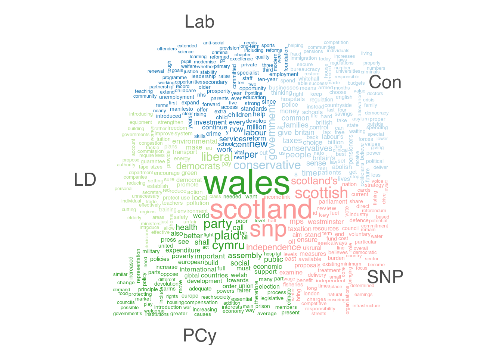
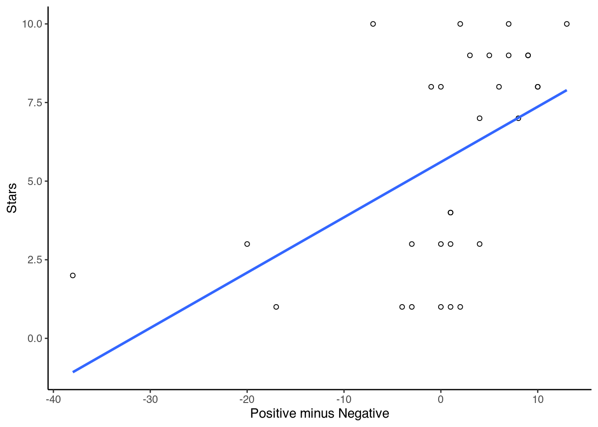
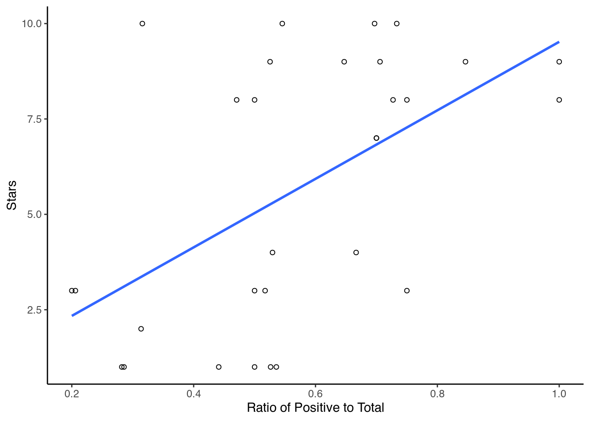

Dictionaries
One of the simplest forms of quantitative text analysis is dictionary analysis. We can define dictionary methods as those which simply use the rate at which key words appear in a text to classify documents into categories or to measure the extent to which documents belong to particular categories, without making further assumptions. In many respects, dictionary methods present a non-statistical, categorical analysis approach.
One of the most well-known examples of using dictionary methods is the measuring the tone in newspaper articles, speeches, children’s writings, and so on, by using the so-called sentiment analysis dictionaries. Another well-known example is the measuring of policy content in different documents as illustrated by the Policy Agendas Project dictionary (Albaugh et al. (2013)).
Here, we will carry out two such analyses, the first a standard analysis and the second focusing on sentiment. For the former, we will use political party manifestos, while for the latter we will use movie reviews. First, though, we will have a look at the data itself and which tools quanteda has to investigate it.
Working with a Corpus
In the previous chapter, we saw that there are many ways to load our data into R. Most often, the result of this is is a data frame which contains the texts. Besides, it also often has information on the name of the documents, the number of sentences and so on.
Within quanteda, the main way to store documents is in the form of a corpus object. This object contains all the information that comes with the texts and does not change during our analysis. Instead, we make copies of the main corpus, change them into the type we need, and run our analyses on them. The advantage of this is that we always can go back to our original data.
Apart from importing texts ourselves, quanteda contains several corpora as well. Here, we use one of these, which contains the electoral manifestos of political parties in the United Kingdom. For this, we first have to load the main package and the package that contains the corpus, and then load the data into R:
library(quanteda)
library(quanteda.corpora)
data(data_corpus_ukmanifestos)
data_corpus_ukmanifestos## Corpus consisting of 101 documents and 6 docvars.
## UK_natl_1945_en_Con :
## "CONSERVATIVE PARTY: 1945 Mr. Churchill's Declaration of Pol..."
##
## UK_natl_1945_en_Lab :
## "Labour Party: 1945 Let Us Face the Future: A Declaration of..."
##
## UK_natl_1945_en_Lib :
## "LIBERAL MANIFESTO 1945 20 Point Manifesto of the Liberal Pa..."
##
## UK_natl_1950_en_Con :
## "CONSERVATIVE PARTY: 1950 This is the Road: The Conservative..."
##
## UK_natl_1950_en_Lab :
## "LABOUR PARTY: 1950 Let Us Win Through Together: A Declarati..."
##
## UK_natl_1950_en_Lib :
## "LIBERAL PARTY 1950 No Easy Way: Britain's Problems and the ..."
##
## [ reached max_ndoc ... 95 more documents ]You should now see the corpus appear in the Environment tab. If you click on it, you can see, amongst others, that the corpus comes with information on the Year of the release of the manifesto and the party it belongs to. As the corpus is quite large, we make it a bit more manageable by only selecting the manifestos for the years 2001 and 2005 for the main five parties. We can do this by using the corpus_subset command for both:
corpus_manifestos <- corpus_subset(data_corpus_ukmanifestos, Year == 2001 | Year == 2005)
corpus_manifestos <- corpus_subset(corpus_manifestos, Party=="Lab" | Party=="LD" | Party == "Con" | Party== "SNP" | Party== "PCy")Now we have our corpus, we can start with the analysis. As noted, we try not to carry out any analysis on the corpus itself. Instead, we keep it as it is and work on its copies. Often, this means transforming the data into another shape. One of the more popular shapes is the data frequency matrix (dfm). This is a matrix which contains the documents in the rows and the word counts for each word in the columns.
Before we can do so however, we have to split up our texts into unique words. To do this, we first have to construct a tokens object. In the command that we use to do this, we can specify how we want our texts to be split (here we use the standard option), and in addition clean our data a bit. For example, we can specify that we want to convert all the texts into lowercase and remove any numbers and special characters.
data_manifestos_tokens <- tokens(corpus_manifestos, what = "word",
remove_punct = TRUE, remove_symbols = TRUE, remove_numbers = TRUE,
remove_url = TRUE, remove_separators = TRUE, split_hyphens = FALSE,
include_docvars = TRUE, padding = FALSE, verbose = TRUE)## Creating a tokens object from a corpus input...## ...starting tokenization## ...UK_natl_2001_en_Con to UK_natl_2005_en_SNP## ...preserving hyphens## ...preserving social media tags (#, @)## ...segmenting into words## ...10,488 unique types## ...removing separators, punctuation, symbols, numbers, URLs## ...complete, elapsed time: 0.838 seconds.## Finished constructing tokens from 10 documents.We can also remove certain stopwords so that words like “and” or “the” do not influence our analysis too much. We can either specify these words ourselves or we can use a list that is already present in R. To see this list, type stopwords("english") in the console. Stopwords for other languages are also available (such as German, French and Spanish). Even more stopwords can be found in the stopword package, that can easily be integrated with quanteda. For now, we will use the English ones. First, however, as all the stopwords are lower-case, we will have to lower case our words as well:
data_manifestos_tokens <- tokens_tolower(data_manifestos_tokens, keep_acronyms = FALSE)
data_manifestos_tokens <- tokens_select(data_manifestos_tokens, stopwords("english"), selection = "remove")Then, we can construct our dfm:
data_manifestos_dfm <- dfm(data_manifestos_tokens)One thing we can do with this dfm is to generate a frequency graph using the topfeatures function. For this, we first have to save the 50 most frequently occurring words in our texts:
features <- topfeatures(data_manifestos_dfm, 50)We then have to transform this object into a data frame, and sort it by decreasing frequency:
features_plot <- data.frame(list(term = names(features),frequency = unname(features)))
features_plot$term <- with(features_plot, reorder(term, -frequency))Then we can plot the results:
library(ggplot2)
ggplot(features_plot) +
geom_point(aes(x=term, y=frequency)) +
theme_classic()+
theme(axis.text.x=element_text(angle=90, hjust=1))We can also generate word clouds. As these show all the words we have, we will trim our dfm first to remove all those words that occurred less than 40 times. We can do this with the dfm_trim function. Then, we can use this newly trimmed dfm to generate the word cloud:
library(quanteda.textplots)
wordcloud_dfm_trim <- dfm_trim(data_manifestos_dfm, min_termfreq = 40)
textplot_wordcloud(wordcloud_dfm_trim)
If we would want to, we can also split up this word cloud based on which words belong to which parties. For this, we have to generate a new dfm and within it, specify the groups that well which words belong to which party:
library(quanteda.textplots)
wordcloud_dfm_comp <- dfm_group(data_manifestos_dfm, groups = Party)
wordcloud_dfm_comp <- dfm_trim(wordcloud_dfm_comp, min_termfreq = 20,
max_words = 40)
textplot_wordcloud(wordcloud_dfm_comp, comparison = TRUE)
Standard Dictionary Analysis
Now we have the first idea of our data, we can turn to a dictionary analysis. We can do so either by making a dictionary ourselves or using an off-the-shelf version. For the latter, we can either import the files we already have into R or use some of the versions that come with the quanteda.dictionaries package. For this, we first load the package:
library(quanteda.dictionaries)We then apply one of these dictionaries to the document feature matrix we made earlier. As a dictionary, we will use the one made by Laver and Garry (2000), meant for estimating policy positions from political texts. We first load this dictionary into R and then run it on the dfm using the dfm_lookup command:
data_dictionary_LaverGarry
dictionary_results <- dfm_lookup(data_manifestos_dfm, data_dictionary_LaverGarry)
dictionary_resultsApart from off-the-shelf dictionaries, it is also possible to create our own which could suit our research question better. One approach in dictionary construction is to use prior theory deductively to come up with different categories and their associated words. Another approach is to use reference texts in order to come up with categories and words inductively. We can also combine different dictionaries as illustrated by Young and Soroka (2012), or different dictionaries and keywords from categories in manual coding scheme (Lind et al. (2019)). Finally, one can use expert or crowdcoding assessments to determine the words that best match different categories in a dictionary (Haselmayer and Jenny (2017)).
If we want to create our own dictionary in quanteda we use the same commands as above, but we first have to create the dictionary. To do so, we specify the words in a named list. This list contains keys (the words we want to look for) and the categories to which they belong. We then transform this list into a dictionary. Here, we choose some words which we believe will allow us to easily identify the different parties:
dic_list <- list(economy = c("tax*", "vat", "trade"), social = c("NHS",
"GP", "health"), devolution = c("referendum", "leave", "independence"),
europe = c("Brussels", "remain", "EU"))
dic_created <- dictionary(dic_list, tolower = FALSE)
dic_created## Dictionary object with 4 key entries.
## - [economy]:
## - tax*, vat, trade
## - [social]:
## - NHS, GP, health
## - [devolution]:
## - referendum, leave, independence
## - [europe]:
## - Brussels, remain, EUIf you compare the dic_list file with the data_dictionary_LaverGarry file, you will find that it has the same structure. To see the result, we can use the same command:
dictionary_created <- dfm_lookup(data_manifestos_dfm, dic_created)
dictionary_created## Document-feature matrix of: 10 documents, 4 features (2.50% sparse) and 6 docvars.
## features
## docs economy social devolution europe
## UK_natl_2001_en_Con 108 27 13 14
## UK_natl_2001_en_Lab 89 86 20 36
## UK_natl_2001_en_LD 104 74 12 37
## UK_natl_2001_en_PCy 14 26 1 1
## UK_natl_2001_en_SNP 51 26 30 10
## UK_natl_2005_en_Con 37 21 8 10
## [ reached max_ndoc ... 4 more documents ]Here, we see that the Conservatives are the most active on the Economy together with the Liberal Democrats. Social issues are for Labour, while the SNP is most active on devolution, as are the Liberal Democrats on Europe.
Sentiment Analysis
The logic of dictionaries is that we can use them to see which kind of topics are present in our documents. Yet, we can also use them to provide us with measurements that are most often related to scaling. One way to do so is with sentiment analysis. Here, we look at whether a certain piece of text is happy, angry, positive, negative, and so on. One case in which this can help us is with movie reviews. These reviews give us a description of a movie and then tell us their opinion. Here, we will use these reviews and apply a sentiment dictionary on them.
First, we load some reviews into R. The corpus we use here contains 50,000 movie reviews, each with a 1-10 rating (amongst others). As 50,000 reviews make the analysis quite slow, we will first select 30 reviews at random from this corpus. We do so via corpus_sample, after which we transform it via a tokens object into a dfm:
library(quanteda.classifiers)
reviews <- corpus_sample(data_corpus_LMRD, 30)
reviews_tokens <- tokens(reviews)
reviews_dfm <- dfm(reviews_tokens)The next step is to load in a sentiment analysis dictionary. Here, we will use the Lexicoder Sentiment Dictionary, included in quanteda and run it on the dfm:
data_dictionary_LSD2015
results_dfm <- dfm_lookup(reviews_dfm, data_dictionary_LSD2015)
results_dfmThe next step is to convert the results to a data frame and view them:
sentiment <- convert(results_dfm, to="data.frame")
sentiment## doc_id negative positive neg_positive neg_negative
## 1 test/pos/82_10.txt 11 7 0 0
## 2 test/neg/2978_4.txt 5 13 0 0
## 3 train/pos/1375_8.txt 24 24 0 0
## 4 test/pos/11479_8.txt 5 11 0 0
## 5 test/pos/8917_10.txt 3 7 0 0
## 6 test/pos/10821_8.txt 0 12 0 0
## 7 train/neg/1244_2.txt 4 4 0 0
## 8 train/pos/9930_8.txt 5 11 0 0
## 9 test/neg/2279_3.txt 17 10 0 0
## 10 test/pos/9015_10.txt 0 12 0 0
## 11 train/neg/9066_4.txt 7 6 0 0
## 12 train/pos/1909_10.txt 2 9 0 0
## 13 test/neg/8183_3.txt 2 1 0 0
## 14 test/pos/9702_8.txt 13 10 0 0
## 15 test/neg/9370_1.txt 8 5 0 0
## 16 train/pos/8057_10.txt 19 23 0 0
## 17 train/pos/11916_7.txt 8 11 0 0
## 18 test/neg/8861_3.txt 3 4 0 0
## 19 train/neg/6533_2.txt 1 5 0 0
## 20 test/pos/1028_10.txt 2 4 0 0
## 21 test/neg/2374_2.txt 4 11 0 0
## 22 test/pos/2943_10.txt 2 21 0 0
## 23 train/pos/5503_10.txt 20 9 0 0
## 24 train/pos/4630_9.txt 8 10 0 0
## 25 train/neg/7493_3.txt 11 8 0 0
## 26 test/pos/6055_10.txt 2 11 0 0
## 27 train/pos/364_10.txt 12 8 0 0
## 28 train/neg/126_1.txt 8 5 0 0
## 29 test/pos/4412_10.txt 18 27 0 0
## 30 train/pos/3757_7.txt 10 5 0 0Since movie reviews usually come with some sort of rating (often in the form of stars), we can see if this relates to the sentiment of the review. To do so, we have to take the rating out of the dfm and place it in a new data-frame with the positive and negative sentiments:
star_data <- reviews_dfm@docvars$rating
stargraph <- as.data.frame(cbind(star_data, sentiment$negative, sentiment$positive))
names(stargraph) <- c("stars","negative","positive")To compare the sentiment with the stars, we first have to combine the senitments into a scale. Of the many ways to do so, the simplest is to take the difference between the positive and negative words (positive – negative). Another option is to take the ratio of positive words against both positive and negative (positive/positive+negative). Here, we do both:
sentiment_difference <- stargraph$positive - stargraph$negative
sentiment_ratio <- (stargraph$positive/(stargraph$positive +
stargraph$negative))
stargraph <- cbind(stargraph, sentiment_difference, sentiment_ratio)Then, we can plot the ratings and the scaled sentiment measures together with a linear regression line:
library(ggplot2)
ggplot(stargraph, aes(x = sentiment_difference, y = stars)) +
geom_point(shape = 1) + geom_smooth(method = lm, se = FALSE) +
xlab("Positive minus Negative") + ylab("Stars") + theme_classic()## `geom_smooth()` using formula 'y ~ x'
ggplot(stargraph, aes(x = sentiment_ratio, y = stars)) + geom_point(shape = 1) +
geom_smooth(method = lm, se = FALSE) + xlab("Ratio of Positive to Total") +
ylab("Stars") + theme_classic()## `geom_smooth()` using formula 'y ~ x'
Finally, we would like to illustrate how one can make inferences by using the output of a dictionary analysis, by estimating confidence intervals around the point estimates. To do so, again the first step is to add a column which will be the total of positive and negative words scored by the dictionary. We do so by copying the data frame to a new data frame and adding a new column filled with NA values:
reviews_bootstrap <- sentiment
reviews_bootstrap$n <- NAWe then again specify the number of reviews, the replications that we want and change the data frame into an array:
library(combinat)
nman <- nrow(reviews_bootstrap)
nrepl <- 1000
manifBSn <- manifBSnRand <- array(as.matrix(reviews_bootstrap[,
2:3]), c(nman, 2, nrepl + 1), dimnames = list(1:nman, names(reviews_bootstrap[,
2:3]), 0:nrepl))Then, we bootstrap the word counts for each movie review and compute percentages for each category using a multinomial draw:
n <- apply(manifBSn[1:nrow(manifBSn), , 1], 1, sum)
p <- manifBSn[, , 1]/n
for (i in 1:nrepl) {
manifBSn[, , i] <- rmultinomial(n, p)
}We can then ask R to compute the quantities of interest. These are standard errors for each category, as well as the percentage coded for each category.
NegativeSE <- apply(manifBSn[, "negative", ]/n * 100, 1, sd)
PositiveSE <- apply(manifBSn[, "positive", ]/n * 100, 1, sd)
perNegative <- apply(manifBSn[, "negative", ]/n * 100, 1, mean)
perPositive <- apply(manifBSn[, "positive", ]/n * 100, 1, mean)We then save these quantities of interest in a new data frame:
dataBS <- data.frame(cbind(reviews_bootstrap[, 1:3], NegativeSE,
PositiveSE, perNegative, perPositive))Then, we first calculate the confidence intervals and add these:
pos_hi <- dataBS$perPositive + (1.96 * dataBS$PositiveSE)
pos_lo <- dataBS$perPositive - (1.96 * dataBS$PositiveSE)
neg_lo <- dataBS$perNegative - (1.96 * dataBS$NegativeSE)
neg_hi <- dataBS$perNegative + (1.96 * dataBS$NegativeSE)
dataBS <- cbind(dataBS, pos_hi, pos_lo, neg_lo, neg_hi)Finally, we can then make the graph. Here, we plot each of the positive and negative points and then overlay them with their error bars:
library(ggplot2)
ggplot() +
geom_point(data = dataBS,aes(x = perPositive, y = doc_id), shape = 0) +
geom_point(data = dataBS,aes(x = perNegative, y = doc_id), shape = 2) +
geom_errorbarh(data = dataBS,aes(x = perPositive, xmax = pos_hi,xmin = pos_lo, y = doc_id)) +
geom_errorbarh(data = dataBS,aes(x = perNegative, xmax = neg_hi,xmin = neg_lo, y = doc_id)) +
xlab("Percent positive/negative with 95% CIs") +
ylab("review")+
theme_classic()As can be seen in this particular example, the fact that some documents are much less lengthier than others introduces a lot of uncertainty in the estimates. As evident from the overlapping confidence intervals in the figure, for most reviews, the percentage of negative words is not much different from the percentage of positive words. In other words: the sentiment for these reviews is rather mixed.